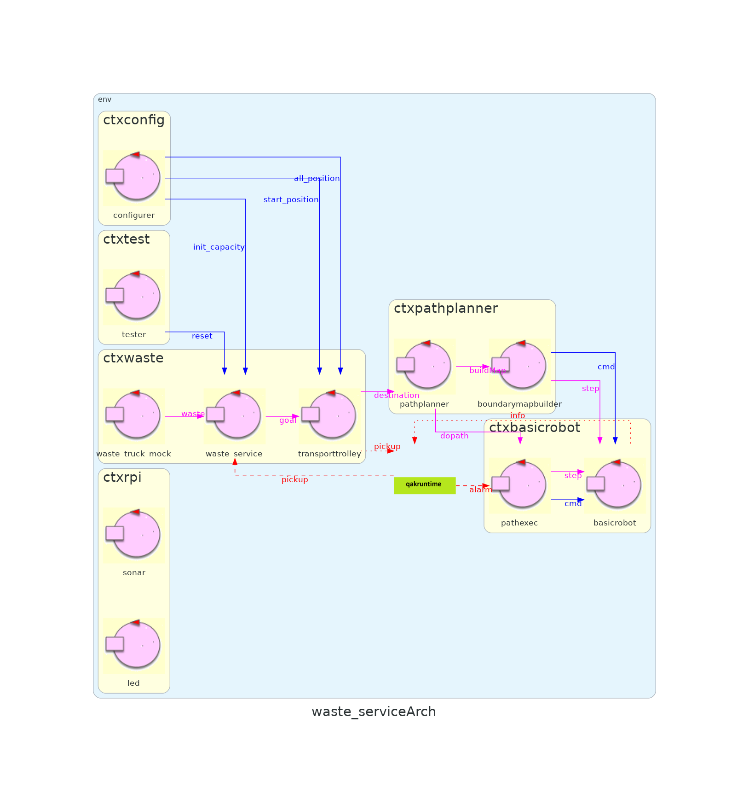
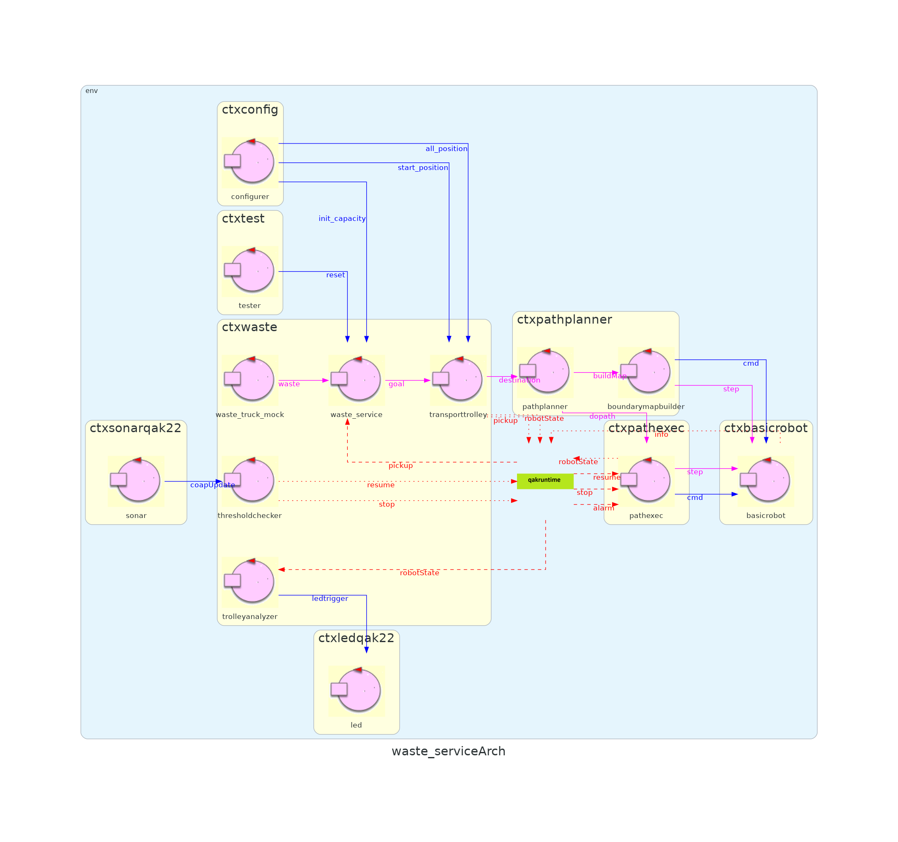

Introduction
Tema finale corso di studio Ingegneria dei sistemi software, Laurea Magistrale Università di Bologna
Precedente
CHECKPOINT SPRINT 1
GOAL SPRINT 2
alarm , il servizio interrompe momentaneamente la sua esecuzione all'avvistarsi di un ostacolo rilevato dal sonar; il funzionamento del trolley viene monitorato con un led, il quale si comporta in modo diverso a seconda che sia a HOME, venga interrotto dal sonar oppure stia lavorando ad una richiesta.
Requirement analysis
alarm
The Sonar is used as an ‘alarm device’: when it measures a distance less that a prefixed value DLIMT, the transport trolley must be stopped. It will be resumed when Sonar detects again a distance higher than DLIMT.
- Problema : Il sonar fa misurazioni continue di distanza e in qualche modo deve arrivare al transport trolley . (denominato in seguito distance).
- Problema: Il transport trolley non reagisce direttamente ad una distanza misurata, ma se questa è o meno superiore ad una soglia (denominato in seguito threshold ).
- Problema: Il transport trolley deve avere la capacità di bloccare l'esecuzione e riprendere da dove ha terminato(denominato in seguito interrupt).
- Problema: Il 'transport trolley' ora sono più componenti, bisogna vedere quale di questi è coinvolto in ogni singolo problema (denominato in seguito abstractTrolley).
a Sonar and a Led connected to a RaspnerryPi. The Led is used as a warning devices, according to the following scheme:
the Led is off when the transport trolley is at HOME
the Led blinks while the transport trolley is moving
the Led is on when transport trolley is stopped .
- Requisito : Sonar e Led sono in una macchina separata dal resto del progetto (denominato in seguito distributed).
- Problema: Il 'transport trolley' ora sono più componenti, bisogna vedere quale di questi è coinvolto in ogni singolo problema (denominato in seguito abstractTrolley).
- Problema: le informazioni di home, moving e stopped sono potenzialmente in 3 componenti diversi, coordinazione e concorrenza tra i componenti per la pilotazione del led ledMultipleSources).
core-functionality, parte rimanente
3. When the load is accepted, the transport trolley reaches the INDOOR, picks up the material, goes to the
proper container and settles the material. During this activity, the WasteService blinks the Led
- Requisito : Specifica più in dettaglio cosa significa moving nel paragrafo precedente per il led. (denominato in seguito movingExplain).
modello requisiti
- modello_requisiti
- path : sprint_2_qak/src/modello_requisiti.qak
- 
{kind=link}
Metto in chiaro la presenza di un altro contesto separato da quelli già progettati, e due entità sonar e led.
Problem analysis
distance
Il sonar è un dispositivo di input; l'uso di un dispositivo di input presenta due modalità principali:
- il componente interessato ai dati prodotti dal dispostivo di input, ne invoca un metodo ‘bloccante’ (ad esempio read()) che fornisce un dato non appena disponibile. interazione a polling ;
- il componente consumatore dei dati si relaziona con dispostivo di input secondo il pattern observer.
Asseriamo inoltre che il sonar è un dispositivo che, una volta attivato, emette informazioni senza sapere a chi interessino, ha solo il compito che il messaggi venga inviato, ma non accettato dai interessati.
Di conseguenza a quanto detto sopra, l'interazione principale del sonar sarà ad evento , soddisfando la semantica di NON conoscenza del destinatario.
Dato che il sonar è una sorgente continua di dati, a parte per applicazioni particolari mi posso permettere di perdere uno dei eventi generati, visto che quello successivo sarà un dato abbastanza simile.
threshold
Riconosciamo DLIMIT come un attributo di applicazione modificabile prima dell'esecuzione, e costante durante ogni utilizzo del sistema.
La "conversione" tra distanza e l'azione che deve fare il trolley può essere situata in 3 componenti
- SONAR : mi accoppia il sonar generico ad una interfaccia di comandi specifica per questa applicazione
- TROLLEY : mi accoppia i componenti del trolley ad una sorgente sonar-like che può fermare l'esecuzione.
- COMPONENTE STAND-ALONE : mantengo la single responsability, sonar e trolley loose coupled tramite due messaggi distinti
se scegliamo di fare un componente STAND-ALONE, essendo il sistema distribuito devo pensare a dove mettere questo componente
- stesso contesto sonar (RPI), così posso "filtrare" le comunicazione prima di inviarle in remoto
- stesso contesto trolley, il sonar fa un emit remoto ad ogni messaggio, ma l'intero contesto del sonar è indipendente dall'applicazione
Sempre nel caso di componente STAND-ALONE, bisogna valutare se dopo la traduzione ogni volta invia il messaggio, oppure adotta determinate politiche; Es. trasmissione solo se il comando è diverso da quello precedente
interrupt && abstractTrolley && movingExplain
Il trolley è composto dai seguenti 5 componenti, e questi sono i comportamenti se solo uno di loro è sensibile al messaggio di stop-resume (originato dal sonar), quando il robot è già in movimento
| COMPONENTE | CONSEGUENZA AD INTERRUPT (robot già in movimento) |
|---|---|
| WASTE_SERVICE | Termino il percorso rimanente arrivando ad Home , finché non ricevo resume non restituisco la risposta loadaccept se non l'ho già inviato prima dell'interruzione |
| TROLLEY_FACADE | Termino la parte di tragitto corrente (mi troverò in una delle seguenti posizioni: HOME, INDOOR, GLASS, PLASTIC), e attendo il resume prima di procedere al prossimo pezzo di percorso, oppure di rispondere al Waste_Service |
| PATH_PLANNER | Termino la parte di tragitto corrente (mi troverò in una delle seguenti posizioni: HOME, INDOOR, GLASS, PLASTIC), oppure sono davanti ad un ostacolo ; non ricalcolo il percorso (caso pathfailure) o rispondo al TROLLEY_FACADE (caso pathdone) fino al resume |
| MAPPER | Termino la singola mossa che sto facendo per mappare la stanza, finchè non ho resume non rispondo al PATH_PLANNER oppure non eseguo la mossa successiva. Il MAPPER però viene chiamato solo nello startup del sistema, nel caso che PATH_PLANNER non abbia già a disposizione una mappa |
| PATH_EXECUTOR | Termino la singola mossa , ovvero quella in cima al path che mi passato il PATH_PLANNER, e aspetto il resume per continuare a decifrare il path, oppure rispondere al planner |
| BASICROBOT | Termino la singola mossa, potenzialmente posso anche bloccare la mossa stessa in esecuzione, e nel resume recuperare la parte di movimento mancante. |
I componenti che hanno più senso di essere sensibili ad stop/resume sono PATH_EXECUTOR oppure basicrobot; l'analista nota che la procedura di recupero per la parte di mossa non terminata può essere arbitrariamente complessa. (preferisce rendere interrompibile il path_executor invece che il basicrobot)
ledMultipleSources
Stesse considerazioni fatte dal sonar al core valgono dal core al led, quindi si preferisce fare un componente a parte che traduce lo stato del trolley in un comando per il led.
Il problema è che le informazioni del trolley sono dati da componenti interni diversi
| INFORMAZIONE | componente | altra possibilità |
|---|---|---|
| trolley a HOME | TROLLEY_FACADE | |
| trolley in movimento | TROLLEY_FACADE in movimento eccetto quando sono in home (evento one-shot per tutta la durata del percorso) |
BASICROBOT ogni comando eseguito notifico lo stato (in movimento) (un evento ogni movimento) |
| trolley STOPPED | PATH_EXECUTOR dipende da come si sceglie di risolvere il problema interrupt |
BASICROBOT dipende da come si sceglie di risolvere il problema interrupt |
Essendo i componenti potenzialemente su contesti diversi, devo pensare al problema che l'ordine di arrivo dei messaggi al "translator" non sia l'ordine logico di generazioni di questi messaggi.
Es. basicrobot esegue l'ultimo movimento per portare ad HOME, emette l'informazione (in movimento), catena di risposte fino a TROLLEY_FACADE ed emette l'informazione (a home); se (in movimento) arriva erroneamente dopo (a home) il led si comporterà in modo sbagliato.
L'argomento in gioco è la coordinazione tra processi interagenti distribuiti; una soluzione possibile consiste nell'addottamento di un ordinamento tramite tempo (fisico o logico); sarebbe che il ricevente (in questo caso il traduttore trolley -> led) si salva il timestamp (o equivalente) dell'ultimo messaggio tradotto, ed ignora i messaggi successivi con timestamp inferiore.
| PROBLEMA | soluzione adottata |
|---|---|
| distance- modalità | pattern observer |
| distance- interazione | evento; il singolo messaggio non è importante perchè quello successivo è simile |
| threshold | componente stand-alone da sonar e trolley |
| threshold- contesto | contesto trolley, il contesto del sonar è indipendente dall'applicazione |
| threshold- interazione | evento; "eredito" la caratteristica della distanza misurata dal sonar (la singola informazione non è importante) |
| interrupt- component | PATH_EXECUTOR con possibilità di interruzione, la singola mossa in esecuzione viene terminata |
| led- frequenza | HOME ed STOPPED vengono inviati "una volta" e non ri-trasmessi, MOVING viene inviato ad ogni effettivo movimento |
| led- interazione | evento (?) sicuro per il blink (singolo messaggio non importante), ma non tanto sicuro per HOME e STOPPED |
| led- componente | componente stand-alone, che raccoglie da tutte le fonte ed è l'unico ad emettere trigger per il led |
| led- coerenza ed ordinamento | logica del ignorare messaggi che sono stati inviati prima (timestamp inferiore) dell'ultimo ricevuto |
modello problema
- modello_problema
- path : sprint_2_qak/src/modello_problema.qak
{kind=link}
Test plans
alarm
led-regime
Eseguire un percorso intero (home-indoor-glass/plastic-home), verificare che per tutto il tragitto il led lampeggia, mentre quando è nella posizione HOME il led si spegne
interrupt-happen
Eseguire un percorso intero con due interruzioni-resume di delay arbitrario e verificare che effettivamente il trolley è fermo in quell'arco di tempo
interrupt-led
Ripetere interrupt-happen, inserendo il led all'interno del sistema testato da led-regime verificare che oltre al comportamento a regime, quando il led è acceso il trolley è effettivamente fermo
sonar-source
Inserire il componente sonar-mock in stile alternato, verificare che le traduzioni siano corrette e poi far partire il sistema comprensivo di led
sonar-real
Inserire il componente sonar reale
Project
qak and interrupt ?
Nel qak attuale (1.2.6) gli attori auto-generati non predispongono del supporto per la semantica di messaggi-interruzione; il progettista si ricorda durante lo svolgimento di altri progetti una implementazione già fatta per il supporto di interrupt per attori come macchine a stati finiti.
La versione java, wrapper per kactor implementa il concetto di interruzione tramite un meccanismo di salvataggio della tabella delle transizioni dello stato interrotto; siamo quindi dinanzi a due possibilità.
priorità qak
una idea di implementazione possibile per mantenere tutto all'interno del mondo qak è di creare stati stop-resume per ognuno degli stati delle FSM interrompibili, questi stati-dummy di resume hanno tutti lo stesso corpo, ma copiano la tabella delle transizione dello stato sospeso.
priorità interrupt
l'altra idea di implementazione che ci evita la riscrittura di questi stati dummy (alla peggio una copia di tutti i stati della FSM interrompibile), è appunto di esternare le FSM interrompibili dal mondo qak, e implementarli in java come istanze di unibo.actor22.QakActor22FsmAnnot , questo significa però che perdiamo la snellità e l' alto livello del meta-modello qak creato per questi componenti, quindi la semplicità di definire il sistema interessato al componente, i messaggi ad esso rilevanti etc etc.
Inoltre bisogna verificare se effettivamente si riesce a far comunicare i due mondi.
Scelta del progettista è di dare priorità all'interrupt, quindi di utilizzare l'implementazione java, per i seguenti due motivi:
- Poca scalabilità dell'altra soluzione, appunto ci sarebbe una proliferazione di stati interni dei componenti interrompibili
- Il concetto interruzione è già stato implementato, il lavoro è principalmente di integrazione dei due mondi e non dello sviluppo in sè della funzionalità
integration problems
- la versione Java non supporta la semantica di messaggio evento esterno, un non attore non può interagire tramite evento con il sistema
- gli eventi emessi dal contesto non vengono propagati ai contesti remoti associati
- non è presente il supporto al protocollo MQTT, di per se non sarebbe un problema ma i contesti qak che supportano MQTT, inviamo esclusivamente messaggi MQTT anche se il ricevente non supporta tale protocollo, facendo sì che dato che PathExecutor non può ricevere MQTT, wasteService non può lavorare con MQTT e di conseguenza con lo stesso pensiero nessun altro contesto
componenti digital Twins
Led e sonar vengono copiati e leggermente modificati rispettivamente da unibo.ledqak22 ed unibo.sonarqak22, essendo componenti sviluppati precedentemente dalla software house e messi a disposizione
Per facilità di testing ogni componente segue una versione simulata, e la scelta tra quali delle due attivare è data da un file di configurazione esterno
Led
Componente stand alone il quale aspetta eventi ledtrigger e a seconda del payload pilota il led (virtuale o concreto)
Rispetto al componente originario della software house, esteso il comportamento per far lampeggiare il led, oltre ad accensione e spegnimento.
Sonar
Componente stand alone i quali osservatori ottengono la distanza rilevata dal sonar (virtuale o concreto); è presente una pipe : sonardatasource --> datacleaner --> sonarqak, è possibile configurare inoltre se il sonar deve essere un demone continuo (Endless) oppure smettere di funzionare dopo un tempo deciso a deploy time (sonardelay).
Modello del Progetto
{kind=link}
per facilità di lettura, ledTrigger è disegnato come un dispaccio, ma nel progetto è un evento: il sistema deve mantenersi funzionante anche se il led non è presente
zooming sui componenti Led e Sonar

Deployment
i file gradle contengono in generale anche il deploy della conoscenza del sistema (file pl)
inoltre per alcuni specifici il deploy può includere scripts oppure file json
CHECKPOINT SPRINT 2
Modello del Progetto
per facilità di lettura, ledTrigger è disegnato come un dispaccio, ma nel progetto è un evento: il sistema deve mantenersi funzionante anche se il led non è presente
zooming sui componenti Led e Sonar
github: